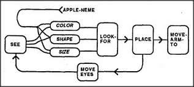

How do higher-level agencies tell lower-level agents what to do? We might expect this problem to be harder for smaller agencies because they can understand so much less. However, smaller agencies also have fewer concerns and hence need fewer instructions. Indeed, the smallest agencies may need scarcely any messages at all. For example, there's little need to tell Get, Put, or Find what to get, put, or find — since each can exploit the outcome of the Look-for agency's activity. But how can Look-for know what to look for? We'll see the answer in a trick that makes the problem disappear. In ordinary life this trick is referred to by names like expectation or context.
Whenever someone says a word like apple, you find yourself peculiarly disposed to notice any apple in the present scene. Your eyes tend to turn in the direction of that apple, your arm will prepare itself to reach out in that direction, and your hand will be disposed to form the corresponding grasping shape. This is because many of your agencies have become immersed in the context produced by the agents directly involved with whatever subject was mentioned recently. Thus, the polyneme for the word apple will arouse certain states of agencies that represent an object's color, shape, and size, and these will automatically affect the Look-for agency — simply because that agency must have been formed in the first place to depend upon the states of our object-description agencies. Accordingly, we can assume that Look-for is part of a larger society that includes connections like these:
This diagram portrays an automatic finding machine. Whether an apple was actually seen, imagined, or suggested by naming it, the agents for Color, Shape, and Size will be set into states that correspond to red, round, and apple-sized. Accordingly, when Look-for becomes active, it cannot help but seek an object with those properties. Then, according to our diagram, once such a thing is found, its location will automatically be represented by the state of an agency called Place — again, because this is the environment within which Look-for grew. The same must be true of the agency Move-arm-to, which must also have grown in the context of some location-representing agency like Place. So when Move-arm-to is aroused, it will automatically tend to move the arm and hand toward that location without needing to be told. Thus, such an arrangement of agencies can carry out the entire apple-moving script with virtually no general-purpose communication at all.
This could be one explanation of what we call focus of mental attention. Because the agency that represents locations has a limited capacity, whenever some object is seen or heard — or merely imagined — other agencies that share the same representation of location are likely to be forced to become engaged with the same object. Then this becomes the momentary it of one's immediate concern.